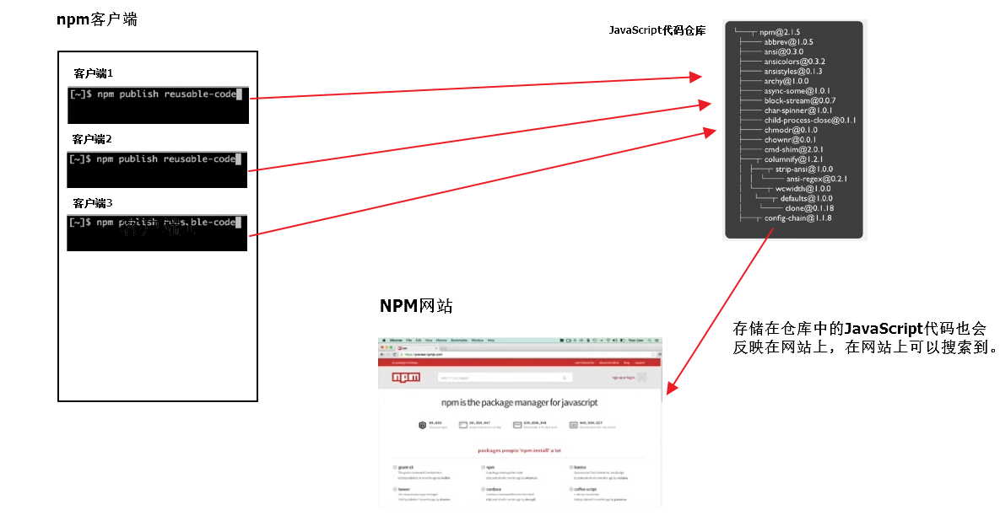

正式学习 node 之前，我们先铺垫一些基础概念 ~
浏览器工作原理
浏览器的组成
人机交互部分（UI 界面）
网络请求部分（Socket）
JavaScript 引擎部分（解析执行 JavaScript）
渲染引擎部分（渲染 HTML、CSS 等）
数据存储部分（cookie、HTML5 中的本地存储 LocalStorage、SessionStorage）
主流渲染引擎
介绍
渲染引擎 又叫 排版引擎 或 浏览器内核。
OA (员工管理系统 : 员工信息、考勤、请假 …)
主流的 渲染引擎 有
Chrome 浏览器 : Blink 引擎（WebKit 的一个分支）。Safari 浏览器 : WebKit 引擎，windows 版本 2008 年 3 月 18 日推出正式版，但苹果已于 2012 年 7 月 25 日停止开发 Windows 版的 Safari。FireFox 浏览器 : Gecko 引擎。Opera 浏览器 : Blink 引擎(早期版使用 Presto 引擎）。Internet Explorer 浏览器 : Trident 引擎。Microsoft Edge 浏览器 : EdgeHTML 引擎（Trident 的一个分支）。
工作原理
解析 HTML 构建 Dom 树（Document Object Model，文档对象模型），DOM 是 W3C 组织推荐的处理可扩展置标语言的标准编程接口。
解析 CSS 构建 CSS 规则树
构建渲染树，渲染树并不等同于 Dom 树，因为像head、body、meta、html标签 或 display: none这样的元素就没有必要放到渲染树中了，但是它们在 Dom 树中。
对渲染树进行布局，定位坐标和大小、确定是否换行、确定 position、overflow、z-index 等等，这个过程叫"layout" 或 "reflow"。
绘制渲染树，调用操作系统底层 API 进行绘图操作。
渲染引擎工作原理示意图
WebKit 工作原理（Chrome、Safari、Opera）
Gecko 工作原理（FireFox）
浏览器的 reflow 或 layout 过程
https://www.youtube.com/watch?v=ZTnIxIA5KGw
打开 Chrome 的 Rendering 功能
第一步：
第二步：
浏览器访问网站过程
在浏览器地址栏中输入网址。
浏览器通过用户在地址栏中输入的 URL 构建 HTTP 请求报文。
1 2 3 4 5 6 7 8 9 GET / HTTP/1.1 Host : www.taobao.com 134.123.132.23Connection : keep-aliveUpgrade-Insecure-Requests : 1User-Agent : Mozilla/5.0 (Windows NT 10.0; Win64; x64) AppleWebKit/537.36 (KHTML, like Gecko) Chrome/57.0.2987.133 Safari/537.36Accept : text/html,application/xhtml+xml,application/xml;q=0.9,image/webp,*/*;q=0.8Accept-Encoding : gzip, deflate, sdch, brAccept-Language : zh-CN,zh;q=0.8,en;q=0.6Cookie : l=Ag0NWp9E8X4hgaGEtIBhOmKxnSOH6kG8; isg=AkZGLTL-Yr9tHDZbgd5bsn4Rlzwg5IphaK-1BzBvMmlEM-ZNmDfacSyDfdgF; thw=cn
浏览器发起 DNS（寻址）解析请求，将域名转换为 IP 地址。
浏览器将请求报文发送给服务器。
服务器接收请求报文（request），并解析。
服务器处理用户请求，并将处理结果封装成 HTTP 响应报文（response）。
1 2 3 4 5 6 7 8 9 10 11 12 13 14 15 16 17 18 19 20 21 22 23 24 25 26 27 28 29 30 31 32 33 34 35 HTTP/1.1 200 OKServer : TengineDate : Thu, 13 Apr 2017 02:24:25 GMTContent-Type : text/html; charset=utf-8Transfer-Encoding : chunkedConnection : keep-aliveVary : Accept-EncodingVary : Ali-Detector-Type, X-CIP-PTCache-Control : max-age=0, s-maxage=300Via : cache8.l2cm10-1[172,200-0,C], cache13.l2cm10-1[122,0], cache3.cn206[0,200-0,H], cache6.cn206[0,0]Age : 293X-Cache : HIT TCP_MEM_HIT dirn:-2:-2X-Swift-SaveTime : Thu, 13 Apr 2017 02:19:32 GMTX-Swift-CacheTime : 300Timing-Allow-Origin : *EagleId : 9903e7e514920502659594264eStrict-Transport-Security : max-age=31536000Content-Encoding : gzip<!DOCTYPE html > <html lang ="zh-CN" > <head > <meta charset ="utf-8" /> <meta http-equiv ="X-UA-Compatible" content ="IE=edge,chrome=1" /> <meta name ="renderer" content ="webkit" /> <title > 淘宝网 - 淘！我喜欢</title > <meta name ="spm-id" content ="a21bo" /> <meta name ="description" content ="淘宝网 - 亚洲较大的网上交易平台，提供各类服饰、美容、家居、数码、话费/点卡充值… 数亿优质商品，同时提供担保交易(先收货后付款)等安全交易保障服务，并由商家提供退货承诺、破损补寄等消费者保障服务，让你安心享受网上购物乐趣！" /> <meta name ="aplus-xplug" content ="NONE" > <meta name ="keyword" content ="淘宝,掏宝,网上购物,C2C,在线交易,交易市场,网上交易,交易市场,网上买,网上卖,购物网站,团购,网上贸易,安全购物,电子商务,放心买,供应,买卖信息,网店,一口价,拍卖,网上开店,网络购物,打折,免费开店,网购,频道,店铺" /> </head > <body > ...... </body > </html >
服务器将 HTTP 响应报文发送给浏览器。
浏览器接收服务器响应的 HTTP 响应报文，并解析。
浏览器解析 HTML 页面并展示，在解析 HTML 页面时遇到新的资源需要再次发起请求。
最终浏览器展示出了页面
HTTP 请求报文和响应报文格式
DNS 解析过程
windows 下 hosts 文件位置
C:\Windows\System32\drivers\etc\hosts
EventLoop
详情参见 ppt
web 开发本质
牢记以下三点
请求，客户端发起请求。
处理，服务器处理请求。
响应，服务器将处理结果发送给客户端
对比一个单机版计算器和 Web 版计算器
客户端处理响应
服务器响应完毕后，客户端继续处理：
浏览器：解析服务器返回的数据
iOS、Android 客户端，解析服务器返回的数据，并且通过 iOS 或 Android 的 UI 技术实现界面的展示功能
关于 C/S（Client/Server）和 B/S（Browser/Server）
C/S: 客户端服务器
B/S: 浏览器服务器
node.js 介绍
node.js 是什么？
node.js 是一个开发平台，就像 Java 开发平台、.Net 开发平台、PHP 开发平台、Apple 开发平台一样。
何为开发平台？有对应的编程语言、有语言运行时、有能实现特定功能的 API（SDK：Software Development Kit）
nodejs 平台使用的编程语言是 JavaScript 语言。
不支持 window、document、bom 对象。
node.js 平台是基于 Chrome V8 JavaScript 引擎构建。
基于 node.js 可以开发控制台程序（命令行程序、CLI 程序）、桌面应用程序（GUI）（借助 node-webkit、electron 等框架实现）、Web 应用程序（网站）。
PHP 开发技术栈: LAMP - Linux Apache MySQL PHP
node.js 全栈开发技术栈: MEAN - MongoDB Express Angular Node.js
node.js 有哪些特点？
事件驱动(当事件被触发时，执行传递过去的回调函数)
非阻塞 I/O 模型（当执行 I/O 操作时，不会阻塞线程）
单线程
拥有世界最大的开源库生态系统 —— npm。
node.js 网站
node.js 官方网站 node.js 中文网 node.js 中文社区
为什么要学习 Node.js?
通过学习 Node.js 开发深入理解服务器开发 、Web 请求和响应过程 、 了解服务器端如何与客户端配合
学习服务器端渲染：art-template、ejs、underscore
学习服务器端为客户端编写接口
现在前端工程师面试，对 Node.js 开发有要求
补充提问：
在 Node.js 平台开发时，能使用 Dom API 吗？比如：document.getElementById('id'); window.location 等?
复习 浏览器端 JavaScript 组成：ECMAscript、Dom、Bom
学习目标
了解服务器开发过程
会使用 node.js 开发基本的 http 服务程序（Web 应用程序）
Node.js 可以用来做什么？
具有复杂逻辑的动态网站
WebSocket 服务器
命令行工具
带有图形界面的本地应用程序
…
终端基本使用
打开应用
notepad 打开记事本
mspaint 打开画图
calc 打开计算机
write 写字板
sysdm.cpl 打开环境变量设置窗口
常用命令
md 创建目录
rmdir(rd) 删除目录，目录内没有文档
echo on a.txt 创建空文件
del 删除文件
rm 文件名 删除文件
Node.js 开发环境准备
普通安装方式官方网站
多版本安装方式
卸载已有的 Node.js
下载nvm
在 C 盘创建目录 dev
在 dev 目中中创建两个子目录 nvm 和 nodejs
并且把 nvm 包解压进去 nvm 目录中
在 install.cmd 文件上面右键选择【以管理员身份运行】
打开的 cmd 窗口直接回车会生成一个 settings.txt 文件，修改文件中配置信息
配置 nvm 和 Node.js 环境变量
NVM_HOME:C:\dev\nvm
NVM_SYMLINK:C:\dev\nodejs
把配置好的两个环境变量加到 Path 中
nvm 常用的命令
nvm list 查看当前安装的 Node.js 所有版本
nvm install 版本号 安装指定版本的 Node.js
nvm uninstall 版本号 卸载指定版本的 Node.js
nvm use 版本号 选择指定版本的 Node.js
Node.js 之 HelloWorld
Node.js 开发 Web 应用程序 和 PHP、Java、ASP.Net 等传统模式开发 Web 应用程序区别
传统模式
Node.js 开发 Web 应用程序
补充提问：
在 node.js 上编写程序
REPL 介绍
REPL 全称: Read-Eval-Print-Loop（交互式解释器）
R 读取 - 读取用户输入，解析输入了 Javascript 数据结构并存储在内存中。
E 执行 - 执行输入的数据结构
P 打印 - 输出结果
L 循环 - 循环操作以上步骤直到用户两次按下 ctrl-c 按钮退出。
在 REPL 中编写程序 （类似于浏览器开发人员工具中的控制台功能）
直接在控制台输入 node 命令进入 REPL 环境
按两次 Control + C 退出 REPL 界面 或者 输入 .exit 退出 REPL 界面
按住 control 键不要放开, 然后按两下 c 键
创建 JavaScript 文件编写程序
JavaScript 文件名命名规则
不要用中文
不要包含空格
不要出现 node 关键字，比如：node.js
建议以 ‘-’ 分割单词
案例
案例 1：编写一个简单的函数, 实现数字相加
1 2 3 4 5 6 7 8 9 10 var n = 10 ;var m = 100 ;function add (x, y ) { return x + y; } var result = add (m, n);console .log ("计算结果是：" + result);
案例 2：文件读写案例
使用到的模块var fs = require('fs');
1、写文件：fs.writeFile(file, data[, options], callback);
参数 1：要写入的文件路径，必填 。
参数 2：要写入的数据，必填 。
参数 3：写入文件时的选项，比如：文件编码，选填。
参数 4：文件写入完毕后的回调函数，必填 。
写文件注意：
该操作采用异步执行
如果文件已经存在则替换掉
默认写入的文件编码为 utf8
回调函数有 1 个参数：err，表示在写入文件的操作过程中是否出错了。
如果出错了err != null，否则 err === null
2、读文件：fs.readFile(file[, options], callback)
参数 1：要读取的文件路径，必填 。
参数 2：读取文件时的选项，比如：文件编码。选填。
参数 3：文件读取完毕后的回调函数，必填 。
读文件注意：
该操作采用异步执行
回调函数有两个参数，分别是 err 和 data
如果读取文件时没有指定编码，那么返回的将是原生的二进制数据；如果指定了编码，那么会根据指定的编码返回对应的字符串数据。
注意：
文件操作中的./表示当前路径，相对的是执行 node 命令的路径，而不是当前被执行的*.js文件的实际路径。
__dirname才永远表示当前被执行的*.js文件的实际路径/表示根目录, 读取文件或写入文件的时候写/目录，在 Windows 下相当于当前磁盘根目录（比如：c:\ 或 d:\ 或 e:\ 等，在 Mac 下相当于硬盘根目录 /）
1 2 3 4 5 6 7 8 9 10 11 12 13 14 15 16 17 18 19 20 21 22 23 24 25 26 27 28 29 30 31 32 33 34 35 36 var fs = require ("fs" );var msg = "你好，世界！你好 Node.js." ;fs.writeFile ("./data.txt" , msg, "utf8" , function (err ) { console .log ("---" + err + "----" ); if (err) { console .log ("文件写入出错了，详细错误信息：" + err); throw err; } else { console .log ("文件写入成功！" ); } }); var fs = require ("fs" );fs.readFile ("./data.txt" , "utf8" , function (err, data ) { if (err) { console .log ("文件读取出错啦！详细信息: " + err); } else { console .log ("文件读取成功，以下是文件内容：" ); console .log (data); } });
案例 3：创建目录案例
1 2 3 4 5 6 7 8 9 10 11 12 13 14 15 16 17 18 19 20 21 22 23 24 25 26 27 28 29 30 31 32 33 34 35 36 37 38 39 40 41 42 43 44 45 46 47 48 49 50 51 52 53 54 55 56 57 var fs = require ("fs" );fs.mkdir ("./test-mkdir" , function (err ) { if (err) { console .log ("创建目录出错了，详细信息如下：" ); console .log (err); } else { console .log ("目录创建成功！" ); } }); var fs = require ("fs" );fs.mkdir ("./01-教学资料" , function (err ) { if (err) { throw err; } fs.mkdir ("./01-教学资料/01-笔记大纲" ); fs.mkdir ("./01-教学资料/02-作业任务" ); fs.mkdir ("./01-教学资料/03-素材资料" ); fs.mkdir ("./01-教学资料/04-随堂笔记" ); }); fs.mkdir ("./02-源代码" , function (err ) { if (err) { throw err; } fs.mkdir ("./02-源代码/预习代码" ); fs.mkdir ("./02-源代码/课堂代码" ); }); fs.mkdir ("./03-视频" ); fs.mkdir ("./04-其他资料" );
注意：
异步操作无法通过 try-catch 来捕获异常，要通过判断 error 来判断是否出错。
同步操作可以通过 try-catch 来捕获异常。
不要使用 fs.exists(path, callback) 来判断文件是否存在，直接判断 error 即可
文件操作时的路径问题
在读写文件的时候 ‘./’ 表示的是当前执行 node 命令的那个路径，不是被执行的 js 文件的路径
__dirname, 表示的永远是"当前被执行的 js 的目录"
__filename, 表示的是"被执行的 js 的文件名（含路径)"
error-first 介绍( 错误优先 )
案例 4：通过 node.js 编写 http 服务程序 - 极简版本
步骤：
加载 http 模块
创建 http 服务
为 http 服务对象添加 request 事件处理程序
开启 http 服务监听，准备接收客户端请求
注意：
浏览器显示可能是乱码，所以可以通过 res.setHeader('Content-Type', 'text/plain; charset=utf-8');设置浏览器显示时所使用的编码。
Chrome 浏览器默认无法手动设置编码，需要安装"Set Character Encoding"扩展。
演示一下设置Content-Type=text/html 和 Content-Type=text/plain的区别。
参考代码：
1 2 3 4 5 6 7 8 9 10 11 12 13 14 15 16 var http = require ("http" );var server = http.createServer ();server.on ("request" , function (req, res ) { console .log ("有人请求了~~" ); }); server.listen (9000 , function ( console .log ("服务已经启动，请访问： http://localhost:9000" ); });
案例 5：通过 node.js 编写 http 服务程序 - 根据不同请求作出不同响应
说明：
根据不同请求，显示 index 页面、login 页面、register 页面、list 页面、404 页面。
请求 / 或 /index
请求 /login
请求 /register
请求 /list
请求除了以上路径之外的路径
参考代码
1 2 3 4 5 6 7 8 9 10 11 12 13 14 15 16 17 18 19 20 21 22 23 24 25 26 27 28 29 30 31 var http = require ("http" );var server = http.createServer (function (req, res ) { console .log (req.url ); if (req.url === "/" || req.url === "/index" ) { res.end ("这是 index.html" ); } else if (req.url === "/login" ) { res.end ("这是 login.html" ); } else if (req.url === "/register" ) { res.end ("这是 register.html" ); } else if (req.url === "/list" ) { res.end ("这是 list.html" ); } else { res.writeHead (404 , "Not Found" ); res.end ("Sorry, page not found." ); } }); server.listen (9000 , function ( console .log ("http://localhost:9000" ); });
案例 6：通过 node.js 编写 http 服务程序 - 通过读取静态 HTML 文件来响应用户请求
步骤：
创建 index.html、login.html、register.html、list.html、404.html 文件。
演示通过读取最简单的 HTML 文件来响应用户。
演示通过读取"具有引入外部 CSS 样式表"的 HTML 文件来响应用户。
演示通过读取"具有 img 标签"的 HTML 文件来响应用户。
注意：
补充知识点：
path 模块的 join() 方法
参考代码：
1 2 3 4 5 6 7 8 9 10 11 12 13 14 15 16 17 18 19 20 21 22 23 24 25 26 27 28 29 30 31 32 33 34 35 36 37 38 39 40 41 42 43 44 45 46 47 48 49 50 51 52 53 54 55 56 57 58 59 60 61 62 63 64 65 66 67 68 69 var http = require ("http" );var fs = require ("fs" );var path = require ("path" );var server = http.createServer (function (req, res ) { var url = req.url .toLowerCase (); if (url === "/" || url === "/index" ) { fs.readFile (path.join (__dirname, "index.html" ), function (err, data ) { if (err) { throw err; } res.writeHead (200 , "OK" , { "Content-Type" : "text/html; charset=utf-8" , }); res.end (data); }); } else if (url === "/login" ) { fs.readFile (path.join (__dirname, "login.html" ), function (err, data ) { if (err) { throw err; } res.writeHead (200 , "OK" , { "Content-Type" : "text/html; charset=utf-8" , }); res.end (data); }); } else if (url === "/register" ) { fs.readFile (path.join (__dirname, "register.html" ), function (err, data ) { if (err) { throw err; } res.writeHead (200 , "OK" , { "Content-Type" : "text/html; charset=utf-8" , }); res.end (data); }); } else if (url === "/404" ) { fs.readFile (path.join (__dirname, "404.html" ), function (err, data ) { if (err) { throw err; } res.writeHead (200 , "OK" , { "Content-Type" : "text/html; charset=utf-8" , }); res.end (data); }); } }); server.listen (9090 , function ( console .log ("please visit: http://localhost:9090" ); });
案例 7：模拟 Apache 实现静态资源服务器
步骤：
单独创建一个目录来实现，比如：创建一个"07-Apache"的目录。
在该目录下新建 public 目录，假设该目录为静态资源目录。
根据用户请求的路径在 public 目录下寻找对应路径下的资源。
如果找到了，那么将该资源返回给用户，如果没找到则返回 404 错误。
通过 mime 模块设置不同类型资源的 Content-Type
实现完毕后把素材中的’An Ocean of Sky’ 和 'Hacker News’分别拷贝到静态资源目录下, 测试是否成功
其他：
介绍 NPM
介绍 mime 第三方模块
npm install mime在代码中直接 var mime = require('mime')
参考代码：
1 2 3 4 5 6 7 8 9 10 11 12 13 14 15 16 17 18 19 20 21 22 23 24 25 26 27 28 29 30 31 32 33 34 35 36 37 38 39 40 41 42 43 44 45 46 47 48 49 50 51 52 53 54 55 56 57 58 59 60 61 62 63 64 var http = require ("http" );var path = require ("path" );var fs = require ("fs" );var mime = require ("mime" );var server = http.createServer ();server.on ("request" , function (req, res ) { var url = req.url .toLowerCase (); url = url === "/" ? "/index.html" : url; var filePath = path.join (__dirname, "public" , url); res.setHeader ("Content-Type" , mime.lookup (url)); fs.readFile (filePath, function (err, data ) { if (err) { if (err.code === "ENOENT" ) { res.setHeader ("Content-Type" , "text/html; charset=utf8" ); res.statusCode = 404 ; res.statusMessage = "Not Found" ; res.end ("<h1>请求的资源不存在！</h1>" ); } else if (err.code === "EACCES" ) { res.setHeader ("Content-Type" , "text/html; charset=utf8" ); res.statusCode = 403 ; res.statusMessage = "Forbidden" ; res.end ("<h1>Permission denied！</h1>" ); } else { throw err; } } else { res.statusCode = 200 ; res.statusMessage = "OK" ; res.end (data); } }); }); server.listen (9000 , function ( console .log ("server is running, please visit: http://localhost:9000" ); });
Common System Errors - 常见错误号
EACCES (Permission denied)
An attempt was made to access a file in a way forbidden by its file access permissions.
访问被拒绝
EADDRINUSE (Address already in use)
An attempt to bind a server (net, http, or https) to a local address failed due to another server on the local system already occupying that address.
地址正在被使用（比如：端口号被占用）
EEXIST (File exists)
An existing file was the target of an operation that required that the target not exist.
文件已经存在
EISDIR (Is a directory)
An operation expected a file, but the given pathname was a directory.
给定的路径是目录
ENOENT (No such file or directory)
Commonly raised by fs operations to indicate that a component of the specified pathname does not exist – no entity (file or directory) could be found by the given path.
文件 或 目录不存在
ENOTDIR (Not a directory)
A component of the given pathname existed, but was not a directory as expected. Commonly raised by fs.readdir.
给定的路径不是目录
同步文件操作 和 异步文件操作
fs.readFile(file[, options], callback)fs.readFileSync(file[, options])
通过设置 http 响应报文头实现弹框下载功能
设置 Content-Type: application/octet-stream || application/force-download
设置 Content-Disposition: attachment; filename=demo.txt
当浏览器在请求资源时，会通过 http 返回头中的 content-type 决定如何显示/处理将要加载的数据，如果这个类型浏览器能够支持阅览，浏览器就会直接展示该资源，比如 png、jpeg、video 等格式。在某些下载文件的场景中，服务端可能会返回文件流，并在返回头中带上 Content-Type:application/octet-stream，告知浏览器这是一个字节流，浏览器处理字节流的默认方式就是下载。
request 对象 和 response 对象
request 对象
request 对象类型 <http.IncomingMessage>, 继承自 stream.Readable
request 对象常用成员
request.headersrequest.rawHeadersrequest.httpVersionrequest.methodrequest.url
response 对象
1 2 3 4 5 res.writeHead (200 , "OK" , { "Content-Type" : "text/html; charset=utf-8" , "Content-Length" : Buffer .byteLength (msg), });
response.write(chunk[, encoding][, callback])
参数 1：要写入的数据，可以是字符串或二进制数据，必填 。
参数 2：编码，默认是 utf8，选填。
参数 3：回调函数，选填。
response.end([data][, encoding][, callback])
结束响应。
This method signals to the server that all of the response headers and body have been sent; that server should consider this message complete. The method, response.end(), MUST be called on each response
res.end()这个方法告诉服务器所有要发送的响应头和响应体都发送完毕了。可以人为这次响应结束了。
同时每次响应都必须调用该方法，用来结束响应
参数 1：结束响应前要发送的数据，选填。
参数 2：编码，选填。
参数 3：回调函数，选填。
response.setHeader(name, value)
response.statusCode
response.statusMessage
npm - Node Package Manager - Node 包管理器
npm 是什么？
npm（全称 Node Package Manager，即 node 包管理器）是 Node.js 默认的、以 JavaScript 编写的软件包管理系统。
npm 官方网站 npm 官方文档
一般当我们说 npm 的时候可能指 3 件事
NPM 网站：https://www.npmjs.com/
NPM 包管理库，存储了大量的 JavaScript 代码库
NPM 客户端，我们所使用的 npm 命令行工具。使用 JavaScript 开发的基于 node.js 的命令行工具，本身也是 Node 的一个包。
参考图片

npm 官方解释：
npm is the package manager for JavaScript and the world’s largest software registry.
npm 是一个 JavaScript 包管理器，并且是世界上最大的软件登记处
discover packages of reusable code — and assemble them in powerful new ways.
发现可重用代码，并集成代码包到项目中的全新的、强大方式
npm makes it easy for JavaScript developers to share and reuse code, and it makes it easy to update the code that you’re sharing.
npm 让 JavaScript 开发者共享和重用代码变的更容易，同时也让我们更容易地更新正在被共享的代码
npm 与 node.js
npm 是 Node.js 默认的软件包管理系统。安装完毕 node 后，会默认安装好 npm
npm 本身也是基于 Node.js 开发的包（软件）
如何安装 NPM?
npm 会随着 Node.js 自动安装，安装完毕 node.js 后会自动安装 npm
查看当前 npm 版本：npm -v
更新 npm：npm install npm@latest -g
npm 使用
在 https://www.npmjs.com/ 网站找到需要的包
在项目的根目录下，执行npm install 包名称安装
在 node.js 代码中通过 require('包名'); 加载该模块
注意：通过npm install 包名安装的包，会自动下载到当前目录下的node_modules目录下，如果该目录不存在，则创建，如果已存在则直接下载进去。
在代码中通过 require('包名'); 加载该模块
----- 上面说的这种方式叫做 本地安装。
npm 全局安装介绍
什么是 npm 全局安装？
npm install 包名 -g npm 全局安装指的是把包安装成了一个命令行工具。全局安装只是为了可以当做命令行使用而已
1 2 3 4 5 npm install mime -g mime a.txt 命令来查看对应的结果
npm 全局安装实际做了 2 件事：
下载包到一个指定的目录C:\Users\username\AppData\Roaming\npm\node_modules
创建一段命令行执行的代码。 C:\Users\username\AppData\Roaming\npm\mime -> C:\Users\steve xiaohu zhao\AppData\Roaming\npm\node_modules\mime\cli.js
npm 常用命令介绍
install，安装包。npm install 包名
uninstall，卸载包。npm uninstall 包名`
version，查看当前 npm 版本。npm version 或 npm -v
init，创建一个 package.json 文件。npm init
注意：当使用 npm init -y 的时候，如果当前文件夹（目录）的名字比较怪（有大写、有中文等等）就会影响 npm init -y 的一步生成操作，此时需要 npm init 根据向导来生成
模块（Modules）和包（Packages）的区别
A module is any file or directory that can be loaded by Node.js’ require().
模块可以是任何一个文件或目录（目录下可以有很多个文件），只要能被 node.js 通过 require()即可。遵循 common.js 规范
A package is a file or directory that is described by a package.json. This can happen in a bunch of different ways!
包是一个文件或目录（目录下可以有多个文件）必须有一个 package.json 文件来描述，就可以是一个包。
node.js 错误调试：
当开启服务后，在浏览器中输入地址，如果出现浏览问题，首先要先看 服务器控制台是否报错。如果报错，直接根据服务器报错进行排错。
打开浏览器开发者工具中的 “网络” 部分，查看请求是否成功发出去了
package.json 文件
package.json 文件的作用？
package.json 文件是一个包说明文件（项目描述文件），用来管理组织一个包（一个项目）
package.json 文件是一个 json 格式的文件
位于当前项目的根目录下
元数据
package.json 文件中常见的项有哪些？
name
version
description
author
main
包的入口 js 文件，从 main 字段这里指定的那个 js 文件开始执行
dependencies
如何创建一个 package.json 文件
通过 npm init 命令 或者 npm init -y 或 npm init -yes 命令
手动创建一个
注意
通过 npm init -y 或 npm init -yes 创建 package.json 文件时，执行命令所在的目录接名称中不能包含大写字母
package.json 文件中，项目名称本身不能包含大写字母
npm 更新新版本后，项目所在的文件夹如果包含中文等特殊字符，创建的时候不会提示一步一步的输入，直接报错。
官方介绍
package.json Using a package.json
发布一个自己的 npm 包
1、注册
2、终端输入 npm login，再输入账号密码
- 注意一定要将镜像源切换为npm官方地址
3、将终端切换到包的根目录之后，运行npm publish 命令，即可将包发布到 npm 上
- 注意: 包名不能雷同
4、运行 npm unpublish 包名 --force 命令，即可从 npm 删除已发布的包。
npm unpublish 命令只能删除 72 小时以内发布的包
npm unpublish 删除的包，在 24 小时内不允许重复发布
Buffer
思考：Buffer 类型产生的原因？主要用来解决什么问题？
看一下什么是 Buffer? 什么是 Stream?
一、类型介绍
JavaScript 语言没有读取或操作二进制数据流的机制。
Node.js 中引入了 Buffer 类型使我们可以操作 TCP 流 或 文件流。
Buffer 类型的对象类似于整数数组，但 Buffer 的大小是固定的、且在 V8 堆外分配物理内存。 Buffer 的大小在被创建时确定，且无法调整。（ buf.length 是固定的，不允许修改 ）
Buffer 是全局的，所以使用的时候无需 require() 的方式来加载
二、如何创建一个 Buffer 对象
常见的 API 介绍
创建一个 Buffer 对象
1 2 3 4 5 6 7 8 9 10 11 12 13 14 var array = [ 0x68 , 0x65 , 0x6c , 0x6c , 0x6f , 0x20 , 0xe4 , 0xb8 , 0x96 , 0xe7 , 0x95 , 0x8c , ]; var buf = Buffer .from (array);console .log (buf.toString ("utf8" ));var buf = Buffer .from ("你好世界！ Hello World!~" );console .log (buf);console .log (buf.toString ());
拼接多个 Buffer 对象为一个对象
1 2 3 var bufferList = [];var buf = Buffer .concat (bufferList);
获取字符串对应的字节个数
1 2 3 4 var len = Buffer .byteLength ("你好世界Hello" , "utf8" );console .log (len);
判断一个对象是否是 Buffer 类型对象
获取 Buffer 中的某个字节
6、获取 Buffer 对象中的字节的个数
三、Buffer 对象与编码
Node.js 目前支持的编码如下：
ascii
utf8
utf16le
base64
latin1
hex
示例代码：
1 2 3 4 5 var buf = Buffer .from ("你好世界，Hello World！" , "utf8" );console .log (buf.toString ("hex" ));console .log (buf.toString ("base64" ));console .log (buf.toString ("utf8" ));
四、思考：为什么会有 Buffer 类型？
Buffer 使用来临时存储一些数据（二进制数据）
当我们要把一大块数据从一个地方传输到另外一个地方的时候可以通过 Buffer 对象进行传输
通过 Buffer 每次可以传输小部分数据，直到所有数据都传输完毕。
五、补充
Stream
Writable Stream
Readable Stream
node.js 模块
在 node.js 开发中一个文件就可以认为是一个模块。
require 的加载过程是同步 的，加载完上一个模块才能加载下一个模块，readFileSync
node.js 模块分类
核心模块（内置模块、原生模块） 所有内置模块在安装 node.js 的时候就已经编译成 二进制文件，可以直接加载运行（速度较快）
文件模块
按文件后缀来分
如果加载时，没有指定后缀名，那么就按照如下顺序依次加载相应模块
.js
.json
.node（C/C++编写的模块）
自定义模块（第三方模块）
mime
cheerio
moment
mongo
…
require 加载模块顺序
看 require() 加载模块时传入的参数是否以 ‘./’ 或 ‘…/’ 或 ‘/’ 等等这样的路径方式开头（相对路径或绝对路径都可以）
是，那么会按照传入的路径直接去查询对应的模块。
不是，那么就认为传入的是 “模块名称”（比如：require(‘http’)、require(‘mime’)）
是核心模块：直接加载核心模块 lib
不是核心模块
依次递归查找 node_modules 目录中是否有相应的包
从当前目录开始，依次递归查找所有父目录下的 node_modules 目录中是否包含相应的包
如果查找完毕磁盘根目录依然没有则加载失败
打印输入 module.paths 查看
require 加载模块注意点
所有模块第一次加载完毕后都会有 缓存，二次加载直接读取缓存，避免了二次开销
因为有 缓存，所以模块中的代码只在第一次加载的时候执行一次
每次加载模块的时候都优先从缓存中加载，缓存中没有的情况下才会按照 node.js 加载模块的规则去查找
核心模块在 Node.js 源码编译的时候，都已经编译为二进制执行文件，所以加载速度较快（核心模块加载的优先级仅次于 缓存加载）
核心模块都保存在 lib 目录下
试图加载一个和 核心模块 同名的 自定义模块（第三方模块）是不会成功的
自定义模块要么名字不要与核心模块同名
要么使用路径的方式加载 …/http
核心模块 只能通过 模块名称 来加载（错误示例：require(‘./http’); 这样是无法加载 核心模块 http 的 ）
require() 加载模块使用 ./ 相对路径时，相对路径是相对当前模块，不受执行 node 命令的路径影响
建议加载文件模块的时候始终添加文件后缀名，不要省略。
相关源码
1 2 3 4 5 6 7 8 9 10 11 12 13 14 15 16 17 18 19 20 21 22 23 24 25 26 27 28 29 30 31 32 33 34 35 36 37 38 39 40 41 42 43 44 45 46 47 48 49 50 51 52 53 54 55 56 57 58 59 60 61 62 63 64 65 66 67 68 69 70 71 72 73 74 75 76 77 78 79 80 81 82 83 84 85 86 87 88 89 90 91 92 93 94 95 96 97 98 99 100 101 102 103 104 105 106 107 108 109 110 111 112 113 114 115 116 117 118 119 120 121 122 123 124 125 126 127 128 129 130 131 132 133 134 135 136 137 138 139 140 141 142 143 144 145 146 147 148 149 150 151 152 153 154 155 156 157 158 159 160 161 162 163 164 165 166 167 168 169 170 171 172 173 174 175 176 177 178 179 180 181 182 183 184 185 186 187 188 189 190 191 192 function Module (id, parent ) { this .id = id; this .exports = {}; this .parent = parent; if (parent && parent.children ) { parent.children .push (this ); } this .filename = null ; this .loaded = false ; this .children = []; } Module .prototype require = function (path ) { assert (path, "missing path" ); assert (typeof path === "string" , "path must be a string" ); return Module ._load (path, this , false ); }; Module ._load = function (request, parent, isMain ) { if (parent) { debug ("Module._load REQUEST %s parent: %s" , request, parent.id ); } var filename = Module ._resolveFilename (request, parent, isMain); var cachedModule = Module ._cache [filename]; if (cachedModule) { return cachedModule.exports ; } if (NativeModule .nonInternalExists (filename)) { debug ("load native module %s" , request); return NativeModule .require (filename); } var module = new Module (filename, parent); if (isMain) { process.mainModule = module ; module .id = "." ; } Module ._cache [filename] = module ; tryModuleLoad (module , filename); return module .exports ; }; function tryModuleLoad (module , filename var threw = true ; try { module .load (filename); threw = false ; } finally { if (threw) { delete Module ._cache [filename]; } } } Module .prototype load = function (filename ) { debug ("load %j for module %j" , filename, this .id ); assert (!this .loaded ); this .filename = filename; this .paths = Module ._nodeModulePaths (path.dirname (filename)); var extension = path.extname (filename) || ".js" ; if (!Module ._extensions [extension]) extension = ".js" ; Module ._extensions [extension](this , filename); this .loaded = true ; }; Module ._extensions [".js" ] = function (module , filename var content = fs.readFileSync (filename, "utf8" ); module ._compile (internalModule.stripBOM (content), filename); }; Module .prototype _compile = function (content, filename ) { var contLen = content.length ; if (contLen >= 2 ) { if ( content.charCodeAt (0 ) === 35 && content.charCodeAt (1 ) === 33 ) { if (contLen === 2 ) { content = "" ; } else { var i = 2 ; for (; i < contLen; ++i) { var code = content.charCodeAt (i); if (code === 10 || code === 13 ) break ; } if (i === contLen) content = "" ; else { content = content.slice (i); } } } } var wrapper = Module .wrap (content); var compiledWrapper = vm.runInThisContext (wrapper, { filename : filename, lineOffset : 0 , displayErrors : true , }); if (process._debugWaitConnect && process._eval == null ) { if (!resolvedArgv) { if (process.argv [1 ]) { resolvedArgv = Module ._resolveFilename (process.argv [1 ], null ); } else { resolvedArgv = "repl" ; } } if (filename === resolvedArgv) { delete process._debugWaitConnect ; const Debug = vm.runInDebugContext ("Debug" ); Debug .setBreakPoint (compiledWrapper, 0 , 0 ); } } var dirname = path.dirname (filename); var require = internalModule.makeRequireFunction .call (this ); var args = [this .exports , require , this , filename, dirname]; var depth = internalModule.requireDepth ; if (depth === 0 ) stat.cache = new Map (); var result = compiledWrapper.apply (this .exports , args); if (depth === 0 ) stat.cache = null ; return result; };
补充 CommonJS 规范
CommonJS 规范
模块的定义
总结：CommonJS 是为 JavaScript 语言制定的一种 模块规范、编程 API 规范
node.js 遵循了 CommonJS 规范
参考：https://www.cnblogs.com/littlebirdlbw/p/5670633.html
https://blog.csdn.net/u014262793/article/details/114554180
关于 node.js 中 Module 详细介绍
乱七八糟 1
url
parse
url.parse(urlString[, parseQueryString[, slashesDenoteHost]])
1 2 3 4 5 const url = require ("url" );const urlString = "https://www.baidu.com:443/ad/index.html?id=8&name=mouse#tag=110" ; const parsedStr = url.parse (urlString);console .log (parsedStr);
url.format(urlObject)
1 2 3 4 5 6 7 8 9 10 11 12 13 14 15 16 17 const url = require ("url" );const urlObject = { protocol : "https:" , slashes : true , auth : null , host : "www.baidu.com:443" , port : "443" , hostname : "www.baidu.com" , hash : "#tag=110" , search : "?id=8&name=mouse" , query : { id : "8" , name : "mouse" }, pathname : "/ad/index.html" , path : "/ad/index.html?id=8&name=mouse" , href : "https://www.baidu.com:443/ad/index.html?id=8&name=mouse#tag=110" , }; const parsedObj = url.format (urlObject);console .log (parsedObj);
resolve
url.resolve(from, to)
1 2 3 4 5 6 7 const url = require ("url" );var a = url.resolve ("/one/two/three" , "four" );var b = url.resolve ("http://example.com/two/three" , "/one" );var c = url.resolve ("/one/two/three" , "../four" );console .log (a);console .log (b);console .log (c);
URLSearchParams
1 2 3 const urlParams = new URLSearchParams(/* url中的search */) urlParams.get(/* 键 */) 注: 浏览器中也有该方法
querystring
parse
querystring.parse(str[, sep[, eq[, options]]])
1 2 3 4 const querystring = require ("querystring" );var qs = "x=3&y=4" ;var parsed = querystring.parse (qs);console .log (parsed);
stringify
querystring.stringify(obj[, sep[, eq[, options]]])
1 2 3 4 5 6 7 const querystring = require ("querystring" );var qo = { x : 3 , y : 4 , }; var parsed = querystring.stringify (qo);console .log (parsed);
escape/unescape
querystring.escape(str)
1 2 3 4 const querystring = require ("querystring" );var str = "id=3&city=北京&url=https://www.baidu.com" ;var escaped = querystring.escape (str);console .log (escaped);
querystring.unescape(str)
1 2 3 4 5 const querystring = require ("querystring" );var str = "id%3D3%26city%3D%E5%8C%97%E4%BA%AC%26url%3Dhttps%3A%2F%2Fwww.baidu.com" ; var unescaped = querystring.unescape (str);console .log (unescaped);
http/https
get
1 2 3 4 5 6 7 8 9 10 11 12 13 14 15 16 17 18 19 20 21 22 23 24 25 26 27 28 29 30 31 32 33 34 35 36 var http = require ("http" );var https = require ("https" );const server = http.createServer ((request, response ) => { var url = request.url .substr (1 ); var data = "" ; response.writeHeader (200 , { "content-type" : "application/json;charset=utf-8" , "Access-Control-Allow-Origin" : "*" , }); https.get ( `https://www.fastmock.site/mock/d4c75f77a8eef86dc58b3fced5bf604e/laoxu/api/getData` , (res ) => { res.on ("data" , (chunk ) => { data += chunk; }); res.on ("end" , () => { response.end ( JSON .stringify ({ ret : true , data, }) ); }); } ); }); server.listen (8080 , () => { console .log ("localhost:8080" ); });
post：服务器提交（攻击）
1 2 3 4 5 6 7 8 9 10 11 12 13 14 15 16 17 18 19 20 21 22 23 24 25 26 27 28 29 30 31 32 33 34 35 36 37 38 39 40 const https = require ("https" );const querystring = require ("querystring" );const postData = querystring.stringify ({ name : "小锦儿" , city : "北京" , desc : "国服第一李白天花板" , message : "我的心可不冷" , type : "刺客" , }); const options = { protocol : "http:" , hostname : "localhost" , method : "POST" , path : "/data" , port : 3000 , headers : { "Content-Type" : "application/x-www-form-urlencoded" , "Content-Length" : Buffer .byteLength (postData), }, }; function doPost ( let data; let req = https.request (options, (res ) => { res.on ("data" , (chunk ) => (data += chunk)); res.on ("end" , () => { console .log (data); }); }); req.write (postData); req.end (); }
跨域方式
跨域：jsonp
1 2 3 4 5 6 7 8 9 10 11 12 13 14 15 16 17 18 19 20 21 22 23 24 25 26 27 28 29 30 31 32 33 34 35 36 37 38 39 40 41 42 43 44 45 46 47 48 49 50 51 52 53 54 55 56 57 58 59 60 61 62 63 64 65 66 67 68 69 70 71 72 73 74 75 76 77 78 79 80 81 82 83 84 85 86 87 88 89 90 91 92 93 94 95 96 97 98 99 100 101 102 103 104 105 106 107 108 109 110 111 112 113 114 115 116 117 118 119 120 121 122 123 124 125 126 127 128 129 130 131 132 133 <!DOCTYPE html > <html lang ="en" > <head > <meta charset ="UTF-8" /> <meta http-equiv ="X-UA-Compatible" content ="IE=edge" /> <meta name ="viewport" content ="width=device-width, initial-scale=1.0" /> <title > Document</title > <script src ="https://cdn.bootcdn.net/ajax/libs/jquery/3.7.1/jquery.min.js" > </script > </head > <body > <script > function ajax ({ url, data, dataType, jsonp, jsonpCallback } ) { return new Promise ((resolve, reject ) => { if (dataType == "jsonp" ) { jsonp = jsonp || "callback" ; jsonpCallback = jsonpCallback || "jQuery" + (Math .random () * 10 + "" ).substring (2 ) + "_" + new Date ().getTime (); window [jsonpCallback] = function (data ) { script.remove (); resolve (data); }; let arr = []; for (let key in data) { arr.push (`${key} =${data[key]} ` ); } arr = arr.join ("&" ); let script = document .createElement ("script" ); script.src = `${url} ?${jsonp} =${jsonpCallback} &${arr} &_=${new Date ().getTime()} ` ; document .body .appendChild (script); } }); } ajax ({ url : "http://localhost:3000/search" , data : { wd : "j" }, dataType : "jsonp" , jsonp : "cb" , jsonpCallback : "sayHi" , }).then ((data ) => { console .log (data); }); </script > </body > </html >
跨域：CORS
1 2 3 4 5 6 7 8 9 10 11 12 13 14 15 16 17 18 19 20 21 22 23 24 25 26 27 28 29 30 31 32 33 34 35 36 37 38 39 40 41 42 43 44 45 46 47 48 const http = require ("http" );http .createServer ((req, res ) => { console .log (req.headers ); let origin = req.headers .origin ; let whiteList = ["http://127.0.0.1:5500" , "http://127.0.0.1:3500" ]; if (whiteList.includes (origin)) { res.setHeader ("Access-Control-Allow-Origin" , origin); res.setHeader ("Access-Control-Allow-Headers" , "myheader" ); res.setHeader ("Access-Control-Allow-Methods" , "PUT,DELETE" ); res.setHeader ("Access-Control-Max-Age" , 10 ); res.setHeader ("Access-Control-Allow-Credentials" , true ); res.setHeader ("Access-Control-Expose-Headers" , "serverHeader" ); res.setHeader ("serverHeader" , "333333" ); } res.end ("1111" ); }) .listen (3000 , () => { console .log ("3000启动" ); }); res.setHeader ("Access-Control-Allow-Origin" , "*" ); res.setHeader ("Access-Control-Allow-Origin" , origin); res.setHeader ("Access-Control-Allow-Headers" , "name" ); res.setHeader ("Access-Control-Allow-Methods" , "PUT" ); res.setHeader ("Access-Control-Max-Age" , 10 ); res.setHeader ("Access-Control-Allow-Credentials" , true ); res.setHeader ("Access-Control-Expose-Headers" , "mycookie,mycookie2" );
1 2 3 4 5 6 7 8 9 10 11 12 13 14 15 16 17 18 19 20 21 22 23 24 25 26 27 28 29 30 <!DOCTYPE html > <html lang ="en" > <head > <meta charset ="UTF-8" /> <meta http-equiv ="X-UA-Compatible" content ="IE=edge" /> <meta name ="viewport" content ="width=device-width, initial-scale=1.0" /> <title > Document</title > </head > <body > <script > let xhr = new XMLHttpRequest (); xhr.open ("put" , "http://127.0.0.1:3000" , true ); document .cookie = "stuId=6666666" ; xhr.withCredentials = true ; xhr.send (null ); xhr.onreadystatechange = function ( if (xhr.readyState == 4 && xhr.status == 200 ) { console .log (xhr.getResponseHeader ("serverHeader" )); console .log (xhr.responseText ); } }; </script > </body > </html >
跨域：middleware（http-proxy-middware）
1 2 3 4 5 6 7 8 9 10 11 12 13 14 15 16 17 18 19 20 21 22 23 24 25 26 27 28 29 30 31 32 33 34 35 36 37 const http = require ("http" );const { createProxyMiddleware } = require ("http-proxy-middleware" );http .createServer ((req, res ) => { let url = req.url ; res.writeHead (200 , { "Access-Control-Allow-Origin" : "*" , }); if (/^\/api/ .test (url)) { let apiProxy = createProxyMiddleware ("/api" , { target : "https://api.it120.cc" , changeOrigin : true , pathRewrite : { "^/api" : "" , }, }); apiProxy (req, res); } else { switch (url) { case "/index.html" : res.end ("index.html" ); break ; case "/search.html" : res.end ("search.html" ); break ; default : res.end ("[404]page not found." ); } } }) .listen (8080 );
1 2 3 4 5 6 7 8 9 10 11 12 13 14 15 16 17 18 19 20 21 22 <!DOCTYPE html > <html lang ="en" > <head > <meta charset ="UTF-8" /> <meta http-equiv ="X-UA-Compatible" content ="IE=edge" /> <meta name ="viewport" content ="width=device-width, initial-scale=1.0" /> <title > Document</title > </head > <body > <script > let xhr = new XMLHttpRequest (); xhr.open ("get" , "http://localhost:3000/api/fyy/shop/goods/list" , true ); xhr.send (null ); xhr.onreadystatechange = function ( if (xhr.readyState == 4 && xhr.status == 200 ) { console .log (xhr.responseText ); } }; </script > </body > </html >
爬虫
1 2 3 4 5 6 7 8 9 10 11 12 13 14 15 16 17 18 19 20 21 22 23 24 25 26 27 28 29 30 31 32 33 34 35 36 37 38 39 40 41 42 43 44 45 46 47 48 49 const https = require ("https" );const http = require ("http" );var iconv = require ("iconv-lite" );const cheerio = require ("cheerio" );http .createServer ((request, response ) => { response.writeHead (200 , { "content-type" : "application/json;charset=utf-8" , }); const options = { protocol : "https:" , hostname : "meizu.com" , port : 443 , path : "/" , method : "GET" , }; const req = https.request (options, (res ) => { let data = "" ; res.on ("data" , (chunk ) => { data += chunk; }); res.on ("end" , () => { filterData (data); }); }); function filterData (data ) { data = iconv.decode (data, "gbk" ); let $ = cheerio.load (data); let $movieList = $(".movie-item" ); let movies = []; $movieList.each ((index, value ) => { movies.push ({ title : $(value).find (".movie-title" ).attr ("title" ), score : $(value).find (".movie-score i" ).text (), }); }); response.end (JSON .stringify (movies)); } req.end (); }) .listen (9000 );
乱七八糟 2
Events
1 2 3 4 5 6 7 8 9 10 11 12 const EventEmitter = require ("events" );class MyEventEmitter extends EventEmitter {}const event = new MyEventEmitter ();event.on ("play" , (movie ) => { console .log (movie); }); event.emit ("play" , "萨瓦迪卡" ); event.emit ("play" , "撒由那拉" );
File System
1 2 3 4 5 6 7 8 9 10 11 12 13 14 15 16 17 18 19 20 21 22 23 24 25 26 27 28 29 30 31 32 33 34 35 36 37 38 39 40 41 42 43 44 45 46 47 48 49 50 51 52 53 54 55 56 57 58 59 60 61 62 63 64 65 66 67 68 69 70 71 72 73 74 75 76 77 78 79 80 81 82 83 84 85 86 87 88 89 90 91 92 93 94 95 96 97 98 99 100 101 102 103 104 105 106 107 108 109 110 111 112 113 114 115 116 117 118 119 120 121 122 123 124 125 126 127 128 129 130 131 132 133 134 135 136 137 138 139 140 141 142 143 144 145 146 147 148 149 150 151 152 const fs = require ("fs" );const fsP = require ("fs" ).promises ;fs.mkdir ("./logs" , (err ) => { console .log ("done." ); }); fs.rename ("./logs" , "./log" , () => { console .log ("done" ); }); fs.rmdir ("./log" , () => { console .log ("done." ); }); fs.writeFile ( "./logs/log1.txt" , "hello" , (err ) => { if (err) { console .log (err.message ); } else { console .log ("文件创建成功" ); } } ); fs.appendFile ("./logs/log1.txt" , "\nworld" , () => { console .log ("done." ); }); fs.readFile ("./logs/log1.txt" , "utf-8" , (err, data ) => { console .log (data); }); fs.promises .readFile ("./a.txt" ) .then (function (result ) { console .log (result); }) .catch (function (error ) { console .log (error); }); const fsP = require ("fs" ).promises ;(async () => { let res = await fsP.readFile ("./04-demo.txt" , "utf-8" ); console .log (res); })(); fs.unlink ("./logs/log1.txt" , (err ) => { console .log ("done." ); }); for (var i = 0 ; i < 10 ; i++) { fs.writeFile (`./logs/log-${i} .txt` , `log-${i} ` , (err ) => { console .log ("done." ); }); } fs.readdir ("./" , (err, data ) => { data.forEach ((value, index ) => { fs.stat (`./${value} ` , (err, stats ) => { console .log ( value + " is " + (stats.isDirectory () ? "directory" : "file" ) ); }); }); }); function myReadDir (path ) { fs.readdir (path, (err, data ) => { data.forEach ((item, index ) => { fs.stat (`${path} /${item} ` , (err, stats ) => { if (stats.isDirectory ()) { myReadDir (`${path} /${item} ` ); } else { fs.readFile (`${path} /${item} ` , "utf8" , (err, data ) => { console .log (data); }); } }); }); }); } myReadDir ("./" );try { const content = fs.readFileSync ("./logs/log-1.txt" , "utf-8" ); console .log (content); console .log (0 ); } catch (e) { console .log (e.message ); } console .log (1 );fs.readFile ("./logs/log-0.txt" , "utf-8" , (err, content ) => { console .log (content); console .log (0 ); }); console .log (1 );fs.readFile ("./logs/log-0.txt" , "utf-8" ).then ((result ) => { console .log (result); }); function getFile ( return new Promise ((resolve ) => { fs.readFile ("./logs/log-0.txt" , "utf-8" , (err, data ) => { resolve (data); }); }); } (async () => { console .log (await getFile ()); })(); const fsp = fsP.readFile ("./logs/log-1.txt" , "utf-8" ).then ((result ) => { console .log (result); }); console .log (fsP);fs.watch ("./logs/log-0.txt" , () => { console .log ("文件有变化" ); });
Stream
1 2 3 4 5 6 7 8 9 10 11 12 13 14 15 16 17 18 19 20 21 22 23 24 25 26 27 28 29 30 31 32 33 34 35 36 37 38 39 40 41 42 为什么要需要流? 因为在node中读取文件的方式有两种，一个是利用fs模块，一个是利用流来读取。如果读取小文件，我们可以使用fs读取，fs读取文件的时候，是将文件一次性读取到本地内存。而如果读取一个大文件，一次性读取会占用大量内存，效率很低，这个时候需要用流来读取。流是将数据分割成段，一段一段的读取，可以控制速率,效率很高,不会占用太大的内存。gulp的task任务，文件压缩，和http中的请求和响应等功能的实现都是基于流来实现的。因此，系统学习下流还是很有必要的 const fs = require ('fs' )const ws = fs.createWriteStream ('./data.txt' )ws.once ('open' , ()=> { console .log ('可写流开启了 开始写入数据' ) }) ws.once ('close' , ()=> { console .log ('可写流关闭了 无法写入数据' ) }) ws.write ('今天周一 好happy' ) ws.write ('今天周二 有点happy' ) ws.write ('今天周三 不开森' ) ws.write ('今天周四 很难过' ) ws.write ('今天周五 崩溃了' ) ws.close () const fs = require ('fs' )const rs = fs.createReadStream ('./任文平.mp4' )rs.once ('open' , ()=> { console .log ('可读流开启 开始读数据 ...' ); }) rs.once ('close' , ()=> { console .log ('可读流关闭 停止读数据 ...' ); }) rs.on ('data' , (chunk )=> { console .log (chunk) console .log (chunk.length ) })
复制案例
1 2 3 4 5 6 7 8 9 10 11 12 13 14 15 16 17 18 19 20 21 22 23 24 25 26 27 28 29 30 const fs = require ("fs" );const rs = fs.createReadStream ("./任文平.mp4" );const ws = fs.createWriteStream ("./任我行.mp4" );rs.pipe (ws);
Zlib
1 2 3 4 5 6 7 8 9 const zlib = require ('zlib' )const gzip = zlib.createGzip ()const readstream = fs.createReadStream ('./logs/Buffer.png' )const writestream = fs.createWriteStream ('./log.png.zip' )readstream .pipe (gzip) .pipe (writestream) 参考网址: https :
ReadLine
1 2 3 4 5 6 7 8 9 10 11 12 13 const readline = require ("readline" );const rl = readline.createInterface ({ input : process.stdin , output : process.stdout , }); rl.question ("What do you think of Node.js? " , (answer ) => { console .log (`Thank you for your valuable feedback: ${answer} ` ); rl.close (); });
Crypto
1 2 3 4 5 6 7 8 const crypto = require ("crypto" );const secret = "abcdefg" ;const hash = crypto .createHmac ("sha256" , secret) .update ("I love you" ) .digest ("hex" ); console .log (hash);
路由
1 2 3 4 5 6 7 8 9 10 11 12 13 14 15 16 17 18 19 20 21 22 23 24 25 26 27 28 29 30 31 32 33 34 35 var http = require ("http" );var fs = require ("fs" );http .createServer (function (req, res ) { switch (req.url ) { case "/home" : res.write ("home" ); res.end (); break ; case "/mine" : res.write ("mine" ); res.end (); break ; case "/login" : fs.readFile ("./static/login.html" , function (error, data ) { if (error) throw error; res.write (data); res.end (); }); break ; case "/fulian.jpg" : fs.readFile ("./static/fulian.jpg" , "binary" , function (error, data ) { if (error) throw error; res.write (data, "binary" ); res.end (); }); break ; default : break ; } }) .listen (8000 , "localhost" , function ( console .log ("服务器运行在： http://localhost:8000" ); });
静态资源服务
readStaticFile
/modules/readStaticFile.js
1 2 3 4 5 6 7 8 9 10 11 12 13 14 15 16 17 18 19 20 21 22 23 24 25 26 27 28 29 30 31 32 33 34 var path = require ("path" );var fs = require ("fs" );var mime = require ("mime" );function readStaticFile (res, filePathname ) { var ext = path.parse (filePathname).ext ; var mimeType = mime.getType (ext); if (ext) { fs.readFile (filePathname, (err, data ) => { if (err) { res.writeHead (404 , { "Content-Type" : "text/plain" }); res.write ("404 - NOT FOUND" ); res.end (); } else { res.writeHead (200 , { "Content-Type" : mimeType }); res.write (data); res.end (); } }); return true ; } else { return false ; } } module .exports = readStaticFile;
server
/server.js
1 2 3 4 5 6 7 8 9 10 11 12 13 14 15 16 17 18 19 20 21 var http = require ("http" );var url = require ("url" );var path = require ("path" );var readStaticFile = require ("./modules/readStaticFile" );var server = http.createServer (function (req, res ) { var urlObj = url.parse (req.url ); var urlPathname = urlObj.pathname ; var filePathname = path.join (__dirname, "/public" , urlPathname); readStaticFile (res, filePathname); }); server.listen (3000 , function ( console .log ("服务器运行中." ); console .log ("正在监听 3000 端口:" ); });
nodejs 暂告一段落
express 相关资料
在这懒得迁移了：https://www.yuque.com/laoxuyyds/co4f2q